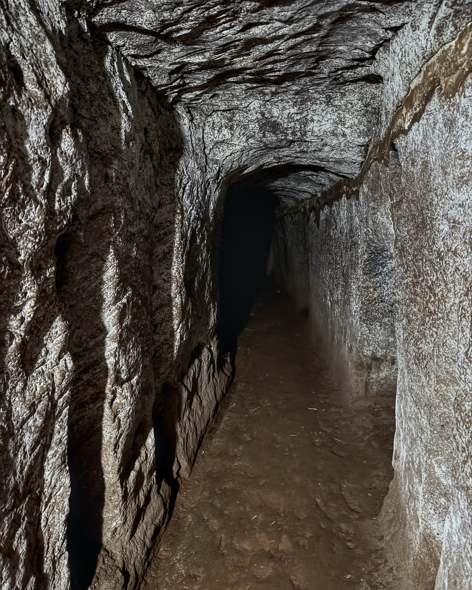
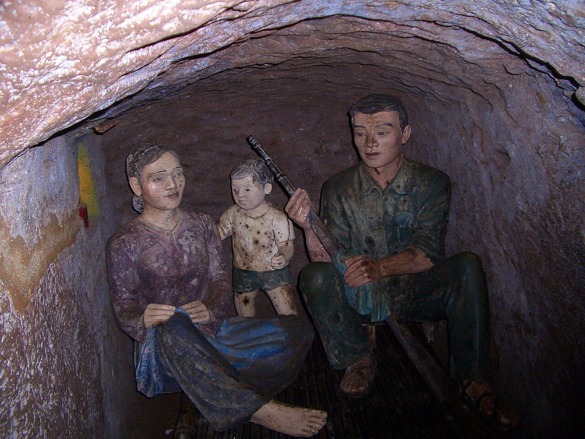

Di tích địa đạo Vịnh Mốc
- Địa danh tại thời điểm nghiên cứu
- Cửa số 3, di tích địa đạo Vịnh Mốc, tỉnh Quảng Trị
- Địa danh hành chính hiện hành
- [Chờ cập nhật]
- Công trình liên quan
- Số 14: quét laser mặt đất và GIS xây dựng CSDL 3D hầm ngầm